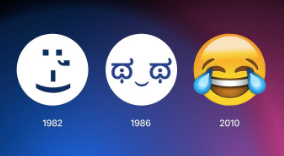
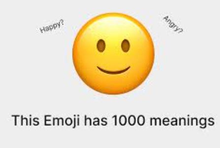

Emojis have come a long way since their birth in the late 1990s. What started as simple smiley faces have transformed into a rich language of symbols, emotions, and ideas that millions of people use daily across the globe.
In 1999, Japanese artist Shigetaka Kurita created the first set of 176 emojis for a mobile internet platform. These basic pictograms were intended to help convey information and emotion with simplicity. Soon, other platforms saw the potential of this visual language and began integrating their own versions.
With the rise of smartphones, especially the launch of the iPhone in 2007, emojis exploded in popularity. Apple added a hidden emoji keyboard to the iOS platform, and once users found it, demand grew rapidly. By 2010, emojis were officially added to the Unicode Standard, allowing them to be used across different devices and operating systems.
Emojis evolved beyond faces. Animals, food, flags, symbols, and even professions became part of the set. By 2024, the Unicode Consortium had approved thousands of emojis. This growing list reflects global trends, cultural shifts, and even political movements.
Today, emojis aren’t just for fun. Brands use them in marketing campaigns, politicians use them in tweets, and activists use them to symbolize causes. There are even emoji-based art exhibits and academic studies analyzing emoji use across cultures.
But what really makes emojis a global language is their ability to transcend words. A heart ❤️ or a face with tears of joy 😂 can instantly communicate emotion without saying a word. This makes them especially powerful in international communication, where language barriers often exist.
In conclusion, the evolution of emojis reflects our digital culture. From their simple beginnings to becoming essential parts of modern communication, emojis are now more than icons — they’re part of how we connect, laugh, love, and even protest in the digital age.